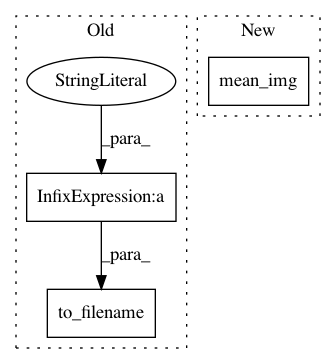

36dd7cf04dcd4e71ca4e1a0086713c51759fd42d,plot_poldrack_space_net.py,,,#,7
Before Change
l1_ratio=l1_ratio, penalty=penalty, alpha=alpha)
decoder.fit(X_train, y_train) // fit
coef_niimg = decoder.coef_img_
coef_niimg.to_filename("poldrack_%s(l1_ratio=%g, alpha=%s)_weights.nii" % (
penalty, l1_ratio, alpha))
////// Visualization //////////////////////////////////////////////////////////////////////////////////////////////////////////////////////////
import matplotlib.pyplot as plt
from nilearn.image import mean_img
After Change
from nilearn.plotting import plot_stat_map
background_img = mean_img(X_train)
for penalty, decoder in decoders.iteritems():
coef_img = mean_img(decoder.coef_img_)
plot_stat_map(coef_img, background_img, title=penalty, display_mode="yz",
cut_coords=[20, -2])
plt.show()
In pattern: SUPERPATTERN
Frequency: 3
Non-data size: 3
Instances
Project Name: nilearn/nilearn
Commit Name: 36dd7cf04dcd4e71ca4e1a0086713c51759fd42d
Time: 2015-07-28
Author: elvis.dohmatob@inria.fr
File Name: plot_poldrack_space_net.py
Class Name:
Method Name:
Project Name: nilearn/nilearn
Commit Name: 311ac284d99ea7243e0918949f3a499a7a93fab5
Time: 2015-11-29
Author: gael.varoquaux@normalesup.org
File Name: examples/decoding/plot_haxby_space_net.py
Class Name:
Method Name:
Project Name: nilearn/nilearn
Commit Name: 986aacd1c7ed2f7000cc9816057f96d59701e066
Time: 2015-07-28
Author: elvis.dohmatob@inria.fr
File Name: plot_poldrack_space_net.py
Class Name:
Method Name: